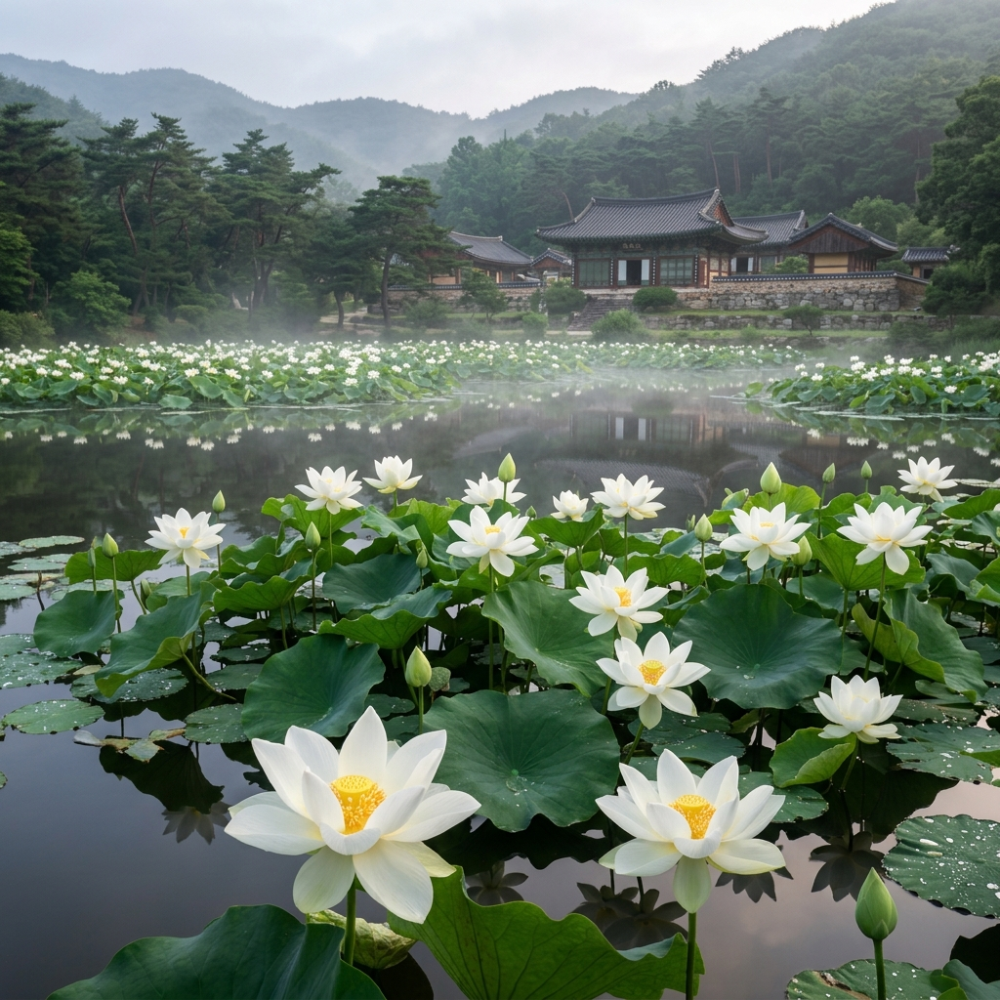
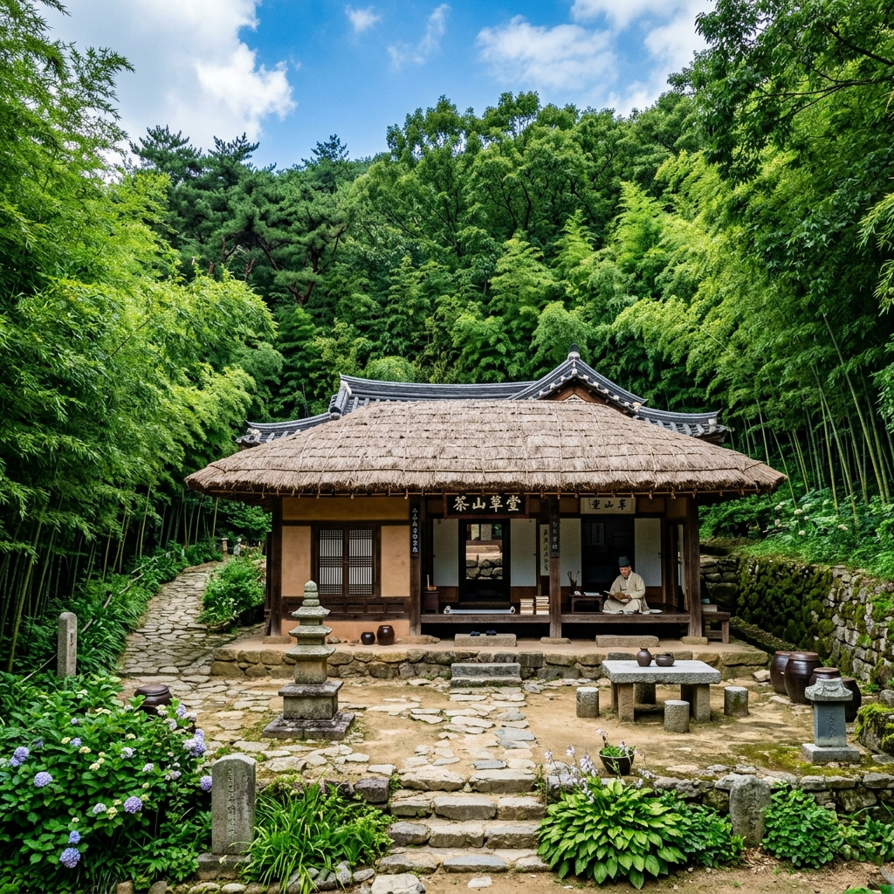
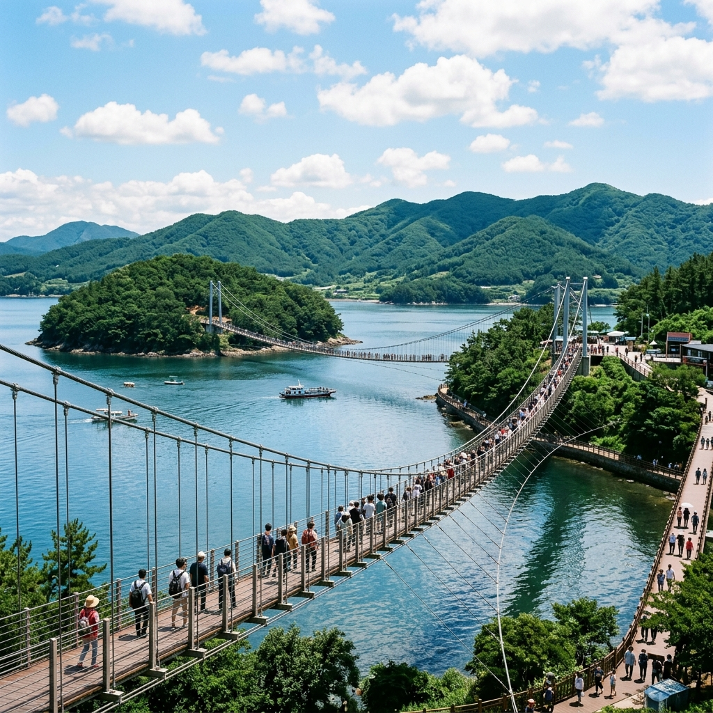

강진 백련지 새벽 연꽃 보러 갔다 온 기록, 다산초당과 가우도 하루 코스
✍️ 직접 가보니
7월 초 강진 백련지를 새벽 5시 반에 방문했습니다. 해가 뜨기 시작하는 시간에 연못 앞에 서자 흰 백련이 물안개와 함께 펼쳐진 풍경이 정말 조용하고 아름다웠습니다. 연꽃 특유의 향기가 새벽 공기와 함께 은은하게 퍼졌고, 그 조용함이 오히려 더 인상적이었습니다. 오전 7시가 넘자 관광버스가 들어오기 시작했는데, 그 이전 새벽 시간이 최고였습니다. 사진 찍으러 일찍 온 분들이 몇 계셨고, 다들 말없이 조용히 사진을 찍고 있었습니다.
01 백련지와 백련사 — 천 년 전통의 연꽃 명소
강진 백련지는 백련사 경내에 조성된 연못으로, 백련사(白蓮寺) 이름 자체가 흰 연꽃에서 유래했습니다. 통일신라시대에 창건된 유서 깊은 사찰로, 경내 연못의 백련(白蓮·흰 연꽃)이 7월~8월 사이 만개합니다.
백련지의 특징은 일반적으로 흔히 보는 홍련(붉은 연꽃)이 아닌
흰 연꽃이라는 점입니다. 흰 연꽃 군락을 이렇게 규모 있게 볼 수 있는 곳은 전국에서도 드뭅니다.
사찰 경내이므로 입장료 없이 방문 가능하지만, 새벽 방문 시 사찰 예절을 지켜주세요.

강진 백련지 새벽 백련 풍경 (이미지 제작 예정)
02 개화 시기와 새벽 방문을 추천하는 이유
백련지 백련의 개화 시기는
7월 초~중순이 절정입니다. 7월 말로 갈수록 꽃이 지기 시작하므로 7월 1~3주차 방문이 가장 좋습니다.
새벽 방문을 강력히 추천하는 이유는 두 가지입니다.
첫째,
연꽃은 오전에 피고 오후에 오므라듭니다. 해가 뜨는 시간인 오전 5시~7시가 꽃이 가장 활짝 핀 상태입니다. 오후에 방문하면 꽃이 반쯤 닫혀 있어 아쉽습니다.
둘째,
물안개와 조용한 분위기. 새벽 연못에 피어오르는 물안개 위로 흰 연꽃이 솟아오른 장면은 오전 10시 이후 방문해서는 볼 수 없는 광경입니다.
03 다산초당과 연결하는 산책 코스
백련사 바로 옆으로 다산 정약용 선생이 18년 유배 생활을 하며 방대한 저술을 남긴
다산초당이 있습니다. 두 곳은 숲길로 이어져 있어 걸어서 30분 거리입니다.
백련사 → 다산초당 숲길은 다산이 실제 걸었던 길로, 동백나무 숲 사이 오솔길이 잘 보존되어 있습니다. 새벽 연꽃을 보고 아침에 이 숲길을 걷는 것이 강진 방문의 황금 루트입니다.
다산초당에는 초당 건물·다조·약천 등이 복원되어 있으며 입장 무료입니다. 강진만이 내려다보이는 전망도 아름답습니다.
다산박물관(입장료 유료)은 도보 10분 거리에 있어 함께 방문할 수 있습니다.

백련사~다산초당 연결 숲길 (이미지 제작 예정)
04 가우도 짚트랙과 흔들다리 — 오후 코스
강진 여행에서 백련지·다산초당 오전 코스를 마치고 오후에는 가우도를 방문하면 좋습니다.
가우도는 강진읍에서 차로 20분 거리의 작은 섬으로,
짚트랙(zip track)과 출렁다리로 유명합니다. 짚트랙은 섬에서 바다 위를 가로질러 약 438m를 내려오는 어트랙션으로, 속도감과 바다 조망을 동시에 즐길 수 있습니다.
가우도 짚트랙 예약: 061-434-2122 (현장 방문 가능하나 성수기 대기 길 수 있음)
가우도 출렁다리는 두 개의 육지 선착장을 가우도 본섬과 연결하는 다리로, 무료 입장해 걷거나 섬을 일주하는 둘레길(약 4km)을 걸을 수 있습니다.
05 솔직한 장단점 — 강진 여행 총평
[좋았던 점]
- 백련지 새벽 분위기: 조용하고 힐링되는 특별한 아침 경험
- 다산초당 숲길: 도시에서 느끼기 어려운 호젓한 숲 산책
- 가우도 짚트랙: 바다 위를 날아가는 짜릿한 체험
- 강진 한식: 강진 한정식이 맛있기로 유명함
[아쉬웠던 점]
- 대중교통으로 접근하기 어려움: 렌터카 또는 차량 필수
- 새벽 백련지는 지역 내 숙박 선행 필수 (서울에서 새벽 출발은 불가)
- 연꽃 절정 시기가 짧아 타이밍 실패 시 아쉬움이 클 수 있음

가우도 짚트랙과 바다 전망 (이미지 제작 예정)
06 강진 1박 2일 추천 루트
1일차 (오후 출발):
강진 도착 → 마량미항(저녁 선셋 명소) → 강진읍 숙박
2일차:
새벽 5시: 백련지 연꽃 감상
오전 7시: 다산초당 숲길 산책
오전 10시: 다산박물관 관람
오후 1시: 강진 한정식 점심
오후 2시: 가우도 짚트랙 + 둘레길
오후 5시: 귀가
이 루트를 따르면 강진의 핵심을 한 번에 즐길 수 있습니다.
07 강진 주변 연계 여행지
강진에서 30~40분 거리에 해남 두륜산 대흥사(천 년 고찰, 동백 명소)와 해남 땅끝마을이 있습니다.
완도로 넘어가면 청산도(슬로시티) 일주 당일치기도 가능합니다. 강진 → 완도항 → 청산도 루트로 이틀 코스가 완성됩니다.
전남 남도 3박 4일 여행을 계획한다면 강진·해남·완도·여수를 묶는 남해안 순환 코스를 추천합니다.
08 방문 전 체크리스트
□ 7월 1~3주차 방문 (백련 절정 시기)
□ 백련사 새벽 방문 시 사찰 예절 준수
□ 전날 강진 숙박 예약 (새벽 방문 필수)
□ 가우도 짚트랙 예약 (성수기, 061-434-2122)
□ 편한 운동화 (숲길 산책용)
□ 카메라·보조배터리 (새벽 촬영)
□ 렌터카 또는 개인 차량 준비
📝 작성자 메모
강진 백련지는 7월 중에도 절정 기간이 생각보다 짧습니다. 7월 초~중순을 놓치면 꽃이 지기 시작해 아쉬움이 남습니다. 방문 전 백련사(061-432-0837)에 전화해서 현재 개화 상태를 확인하는 게 가장 확실합니다. 저도 처음 갔을 때 살짝 피기 시작한 시기여서 다음에 절정 때 다시 가야겠다고 마음먹었습니다.
#강진백련지
#백련사연꽃
#강진여행
#다산초당
#가우도
#7월연꽃
#전남여행
#국내여행
#남도여행
#백련